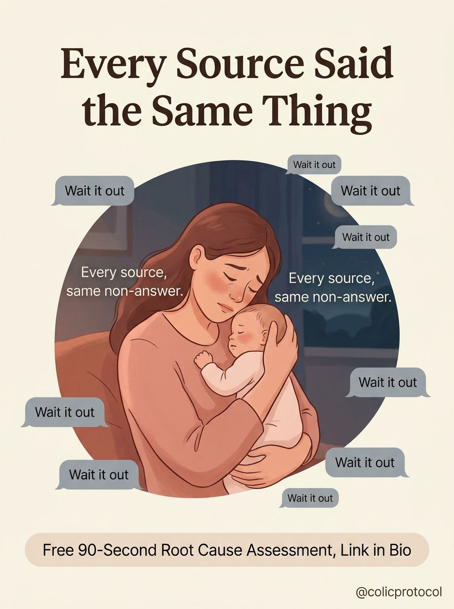
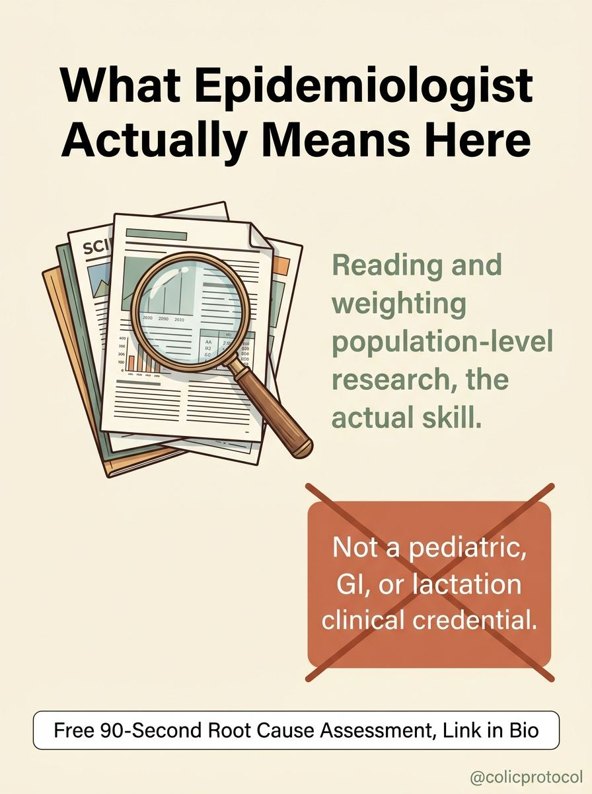

My daughter Zion, week 3, 2AM.
Why an epidemiologist ended up building a colic protocol instead of leaving it to the usual advice, and exactly what that credential does and doesn't qualify me to say.
Zion was three weeks old the night the crying stopped following any pattern I could find. Not colic-as-a-diagnosis yet, just hours of it, every evening, with nothing we tried making a consistent difference. Our pediatrician's advice was the standard advice: it's normal, it'll pass, wait it out. That's often true, and it also isn't an answer for what to do at 2AM.
I'm an epidemiologist by training. My actual job is reading, weighting, and synthesizing population-level research, figuring out which studies are strong enough to trust and which aren't, at scale, professionally. So instead of trying another single remedy, I went back to the primary literature instead of the secondary advice, the way I would for any other question in my work.
"I'm an epidemiologist. That means I know how to read a colic study and tell a strong one from a weak one. It doesn't make me her pediatrician, and it never will."What I found was that most colic advice treats it as one problem with one fix, when the evidence actually points to three distinct, separately-treatable systems: gut inflammation, nervous system dysregulation, and acoustic environment mismatch. Once I stopped treating it as one problem and started figuring out which of the three was actually driving Zion's crying, within 48 hours our evenings looked different. Not because any single technique was new. Because running the right one, for the right system, in sequence, is the part nobody had told us to do.
That sequence, tested and refined since with more research and more families, is the Calm Baby Blueprint. The free 90-second assessment on this site is the same diagnostic starting point I wish someone had handed me at week 3, instead of "wait it out" for the fourth time.


What "epidemiologist" actually means here, stated plainly.
This matters enough to say directly rather than let it sit implied. Credentials get stretched further than they should all the time, and the honest thing to do is draw the line myself before anyone has to ask where it is.
Reading, weighting, and synthesizing population-level research literature. It's exactly the skill used to separate a strong colic RCT from a weak one, and to tell the difference between a study showing causation versus mere association.
It is not a pediatric credential, a gastroenterology credential, or a lactation credential. Nothing on this site should be read as clinical advice specific to your baby. That's what your pediatrician is for, and this protocol is built to work alongside that relationship, not around it.
Check the work yourself. That's the point.
If you're the type to Google a study citation before you trust it, this was built with exactly that reader in mind. Every specific claim on this site traces back to a named, findable study. A few places to start:
- Savino et al., Pediatrics, 2010, the original randomized controlled trial on L. reuteri DSM 17938 in breastfed infants with colic.
- Any Cochrane review of simethicone (gas drops) for infant colic.
- The current network meta-analysis literature on probiotic strains and colic, which is where the "ranked first across trials" claim on this site comes from.
Find out which system is driving it. Free.
90 seconds, no payment required, a result sent straight to your inbox.
Take the Free Assessment →